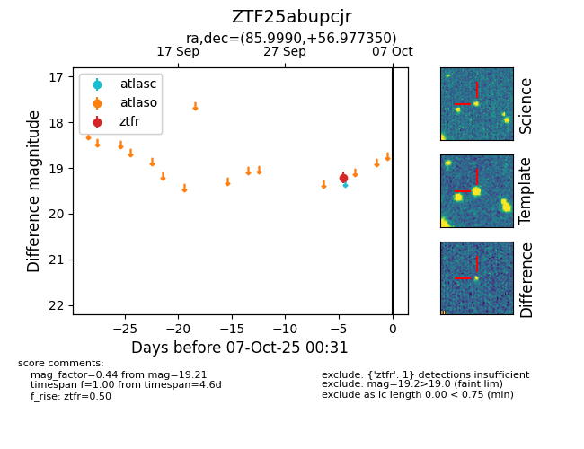

FINK: ZTF25abupcjr
Lasair: ZTF25abupcjr
ALeRCE: ZTF25abupcjr
ZTF25abupcjr (ztf,fink)
equatorial (ra, dec) = (85.9990,+56.97735)
galactic (l, b) = (155.4437,+13.98375)

last ztfr=19.21
1 ztfr detections